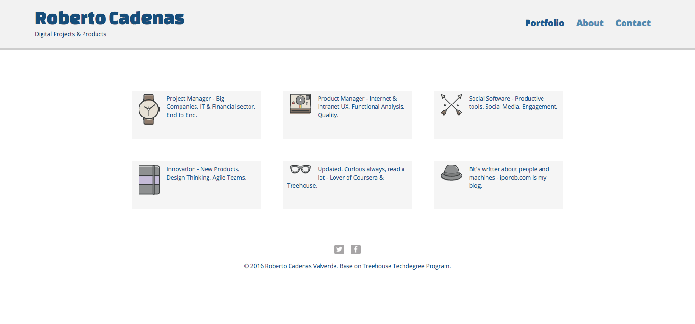

Hello, I’m Roberto.
My home is Madrid, Spain.
My home is Madrid, Spain.
Hi! I'm PM in a IT company in Spain. I have a past like Java developer but today I don't code at work. Sometimes, I miss it. I like to be updated and I love front-end and UX too. These are the are reasons becuase I do things like this profile.
Sometimes I dream living in San Francisco and working for a facy startup. But, for me is enought to enjoy with code and to learn a lot with treehouse at nights.
I want to know how creat great websites, apps and digital products with my own hands. I'm starting with the next technologies:
I’d like to create my startup with them.
I like sports, go to the gym and listen music. In my pocket there are always my headphones.
I enjoy playing with technologies and new widgets, watching sci-fi and reading books.
I you want to see my progress and chat with me about it:
